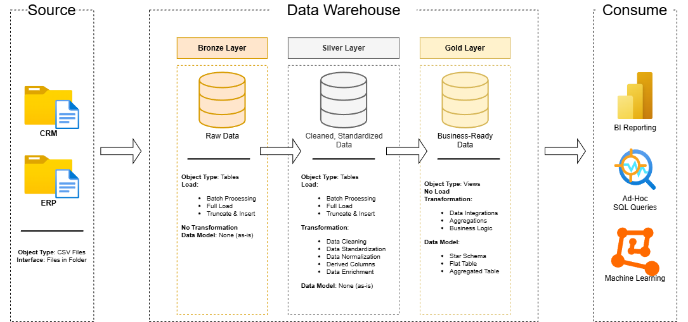
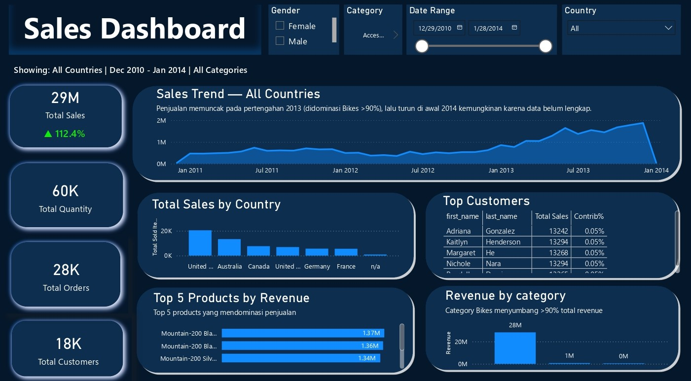
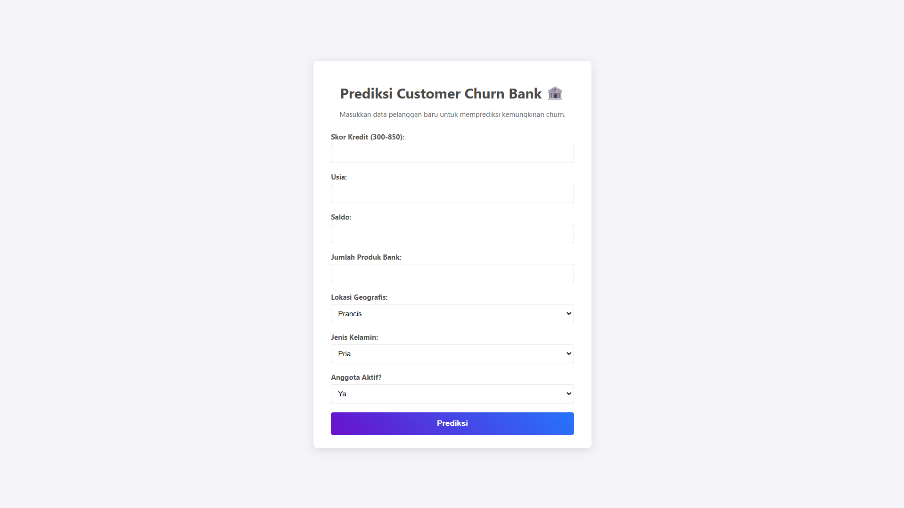
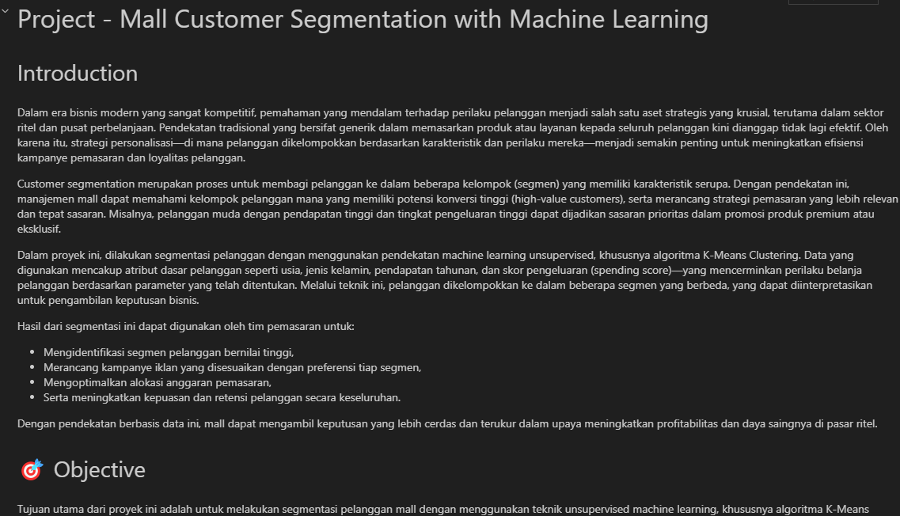
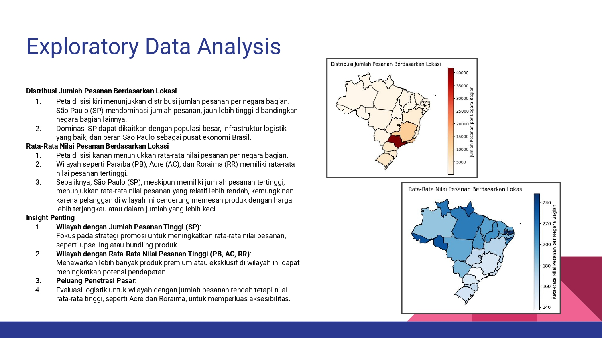
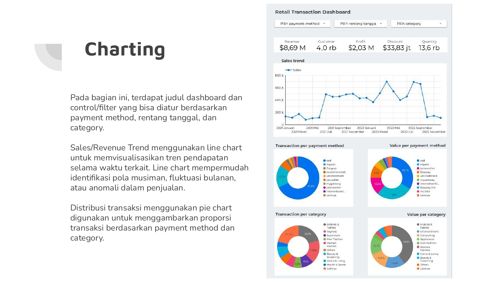

Project Case Studies
Each project starts with a real business problem — not just a dataset. Click on any image to explore screenshots in detail.

⚡ TL;DR: Mengubah raw data CRM & ERP menjadi dashboard analitik berbasis star schema dalam satu pipeline otomatis.
Dua sistem source (CRM dan ERP) menyimpan data customer, produk, dan transaksi secara terpisah dan tidak terstruktur — tidak ada cara untuk menganalisis bisnis secara holistik tanpa unified data model yang bisa dipercaya.
MMembangun end-to-end data warehouse dengan medallion architecture di SQL Server: Bronze layer (raw data ingestion via BULK INSERT stored procedure), Silver layer (data cleaning, standardization, normalization via ETL stored procedure), dan Gold layer (Star Schema business-ready views: fact_sales + dim_customers + dim_products). Setiap layer dilengkapi quality checks dan dokumentasi data catalog.
Gold layer menghasilkan 6 analytical query sets: database exploration, dimensions exploration, date range analysis, key measures (total sales, quantity, AOV), magnitude analysis (revenue per category, per customer, per country), dan ranking analysis dengan window functions (RANK(), DENSE_RANK(), ROW_NUMBER()).
Pipeline dapat dieksekusi dengan dua command (EXEC bronze.load_bronze → EXEC silver.load_silver) menghasilkan business-ready views yang langsung dapat digunakan untuk BI reporting, ad-hoc SQL queries, atau machine learning — dari raw CSV ke analytical-ready dalam satu automated flow.


⚡ TL;DR: End-to-end ML pipeline membandingkan 4 model, mendeteksi sinyal churn, dan di-deploy sebagai Flask web app.
Bank kehilangan nasabah tanpa sistem peringatan dini — strategi retensi berjalan reaktif, padahal biaya akuisisi nasabah baru 5–25× lebih mahal daripada mempertahankan yang sudah ada.
Nasabah dengan saldo tinggi justru lebih berisiko churn (bukan yang saldo rendah). Nasabah >2 produk menunjukkan risiko meningkat. Nasabah di Jerman churn signifikan lebih tinggi. Dipilih dua model untuk dua skenario: SVC (Recall 0.77) untuk retensi agresif, LightGBM untuk efisiensi budget.
Flask deployment membuktikan kemampuan membawa model ke sistem yang langsung digunakan tim bisnis — bukan hanya notebook.

⚡ TL;DR: Menganalisis pola pengeluaran dengan K-Means clustering untuk menemukan 5 segmen demi optimasi budget marketing.
Mall memperlakukan 200 pelanggan dengan cara yang sama persis. Tanpa segmentasi berbasis data, budget marketing tersebar merata ke pelanggan yang responsnya sangat berbeda — conversion rendah, ROI tidak optimal.
5 segmen teridentifikasi: Affluent Spenders (target loyalty program), Wealthy Cautious (hidden opportunity — income tinggi tapi spending rendah, perlu strategi aktivasi), Young Enthusiasts, Balanced Traditionalists, dan Frugal Seniors. Dianalisis dari 3 sudut pandang termasuk 3D clustering interaktif via Plotly.

⚡ TL;DR: Analisis geospasial mengidentifikasi pasar high-value tersembunyi dengan AOV tertinggi di luar wilayah dominan.
Platform e-commerce Brasil beroperasi di 26+ negara bagian tanpa visibilitas jelas: apakah strategi yang sama efektif untuk semua wilayah? Di mana pasar bernilai tinggi yang tersembunyi di balik dominasi volume São Paulo?
São Paulo mendominasi volume, namun AOV-nya rendah. Sebaliknya, Paraíba, Acre, dan Roraima memiliki volume kecil tapi AOV tertinggi. Rekomendasi: strategi berbeda untuk market massal vs high-value.

⚡ TL;DR: Mengubah laporan manual mingguan menjadi dashboard real-time yang memantau 67% revenue utama secara otomatis.
Tim bisnis retail menunggu laporan manual mingguan, sehingga keputusan menjadi lambat dan reaktif.
3 produk top contributor menyumbang 67% revenue, namun ketiganya menunjukkan tren penurunan konsisten. Dashboard self-serve mengubah budaya reaktif menjadi proaktif.